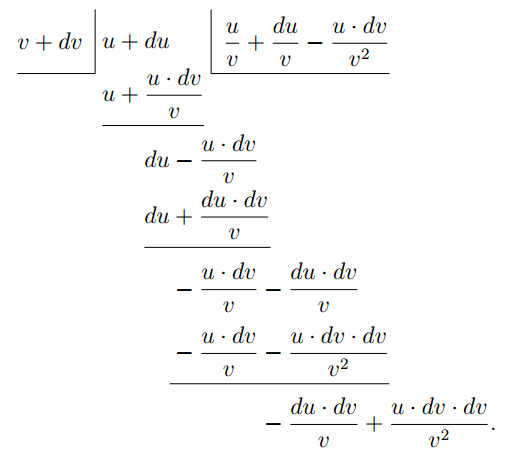

我们已经学习了如何求简单代数函数的导数，如 \(x^2 + c\) 或 \(ax^4\)，现在我们要考虑如何处理两个或多个函数的和。
例如，令
\[
y = (x^2+c) + (ax^4+b);
\]
那么它的 \(\dfrac{dy}{dx}\) 会是什么?我们该如何着手解决这个新问题？
这个问题的答案非常简单：逐个求导即可，如下所示：
\[
\dfrac{dy}{dx} = 2x + 4ax^3.
\]
如果你对此是否正确有任何疑问，请尝试一个更一般的情况，从基本原理开始推导。这就是方法。
令 \(y = u+v\), 其中 $ u$ 是 \(x\) 的任意函数, \(v\) 是 \(x\) 的另一个任意函数。然后，让 \(x\) 增加到 \(x+dx\)，\(y\) 将增加到 \(y+dy\)；\(u\) 将增加到 \(u+du\)；\(v\) 增加到 \(v+dv\)。
于是我们得到：
\[
y+dy = u+du + v+dv.
\]
减去原来的 \(y = u+v\)，得到
两边除以 \(dx\)，得到：
\[
\dfrac{dy}{dx} = \dfrac{du}{dx} + \dfrac{dv}{dx}.
\]
这证明了这个方法的正确性。您可以分别对每个函数求导，然后将结果相加。因此，如果现在取前一段中的例子，并代入这两个函数的值，使用示例中的符号(参见第3章)，我们将得到：
\begin{alignat*}{2}
\frac{dy}{dx}
& = \frac{d(x^2+c)}{dx} &&+ \frac{d(ax^4+b)}{dx} \\
& = 2x &&+ 4ax^3,
\end{alignat*}
与之前完全相同。
如果有三个 \(x\) 的函数，我们可以称之为 \(u\)、\(v\) 和 \(w\)，则有
\begin{align*}
y &= u+v+w; \\
\frac{dy}{dx} &= \frac{du}{dx} + \frac{dv}{dx} + \frac{dw}{dx}.
\end{align*}
至于减法，它立即就得出结论；因为如果函数 \(v\) 本身带有负号，它的微分系数也会是负的。因此，通过对
\begin{align*}
y &= u-v, \\
\frac{dy}{dx} &= \frac{du}{dx} - \frac{dv}{dx}.
\end{align*}
但是，当我们处理积时，事情就不那么简单了。
假设我们需要对以下表达式求导：
\[
y = (x^2+c) × (ax^4+b),
\]
我们该怎么做？结果当然不会是 \(2x × 4ax^3\)，因为很容易看出 \(c × ax^4\) 和 \(x^2 × b\) 并没有被包括在这个乘积中。
现在我们有两种方法可以处理这个问题。
第一种方法。先进行乘法运算，然后在完成计算后再求导。
因此，将 \(x^2 + c\) 和 \(ax^4 + b\) 相乘。
这样得到 \(ax^6 + acx^4 + bx^2 + bc\) 。
现在求导，得到：
\[
\dfrac{dy}{dx} = 6ax^5 + 4acx^3 + 2bx.
\]
第二种方法。回到基本原理，考虑方程
其中 \(u\) 是 \(x\) 的一个函数，\(v\) 是 \(x\) 的另一个任意函数。然后，如果 \(x\) 增加到 \(x+dx\)，\(y\) 增加到 \(y+dy\)，\(u\) 增加到 \(u+du\)，\(v\) 增加到 \(v+dv\)，我们将得到：
\begin{align*}
y + dy &= (u + du) × (v + dv) \\
&= u · v + u · dv + v · du + du · dv.
\end{align*}
现在 \(du · dv\) 是二阶小量，因此在极限中可以忽略，得到
\[
y + dy = u · v + u · dv + v · du.
\]
然后，减去原来的 \(y = u· v\)，我们得到
\[
dy = u · dv + v · du;
\]
并将两边除以 \(dx\)，得到结果：
\[
\dfrac{dy}{dx} = u \dfrac{dv}{dx} + v \dfrac{du}{dx}.
\]
这表明我们的操作步骤如下：要对两个函数的积求导，对每个函数分别乘以另一个函数的微分系数，然后将得到的两个积相加。
请注意，这个过程相当于以下步骤：当你对 \(v\) 求导时，将 \(u\) 视为常数；然后当你对 \(u\) 求导时，将 \(v\) 视为常数；整个微分系数 \(\dfrac{dy}{dx}\) 就是这两部分的和。
现在，找到这个规则后，应用它到前面考虑的具体例子。
我们想对以下乘积求导：
\[
(x^2 + c) × (ax^4 + b).
\]
设 \((x^2 + c) = u\)；且 \((ax^4 + b) = v\)。
然后，根据刚才建立的一般规则，可以写成：
\begin{alignat*}{2}
\dfrac{dy}{dx}
&= (x^2 + c)\, \frac{d(ax^4 + b)}{dx} &&+ (ax^4 + b)\, \frac{d(x^2 + c)}{dx} \\
&= (x^2 + c)\, 4ax^3 &&+ (ax^4 + b)\, 2x \\
&= 4ax^5 + 4acx^3 &&+ 2ax^5 + 2bx, \\
\dfrac{dy}{dx}
&= 6ax^5 + 4acx^3 &&+ 2bx,
\end{alignat*}
与之前的结果完全相同。
最后，我们要对商求导。
考虑这个例子 \(y = \dfrac{bx^5 + c}{x^2 + a}\)。在这种情况下，事先尝试完成除法是没有用的，因为 \(x^2 + a\) 不能整除 \(bx^5 + c\), ，它们也没有共同因子。因此只能回到基本原理，找出规则。于是我们设
其中 \(u\) 和 \(v\) 是自变量 \(x\) 的两个不同函数。然后，当 \(x\) 变为 \(x + dx\) 时，\(y\) 变为 \(y + dy\)；\(u\) 变为 \(u + du\)；\(v\) 变为 \(v + dv\)。因此
\[
y + dy = \dfrac{u + du}{v + dv}.
\]
现在执行代数除法如下：

由于这两个余数都是二阶小量，因此可以忽略不计，除法可以在此处停止，因为任何进一步的余数将是更小的量。
于是我们得到：
\[
y + dy = \dfrac{u}{v} + \dfrac{du}{v} - \dfrac{u· dv}{v^2};
\]
这可以写为
\[
= \dfrac{u}{v} + \dfrac{v· du - u· dv}{v^2}.
\]
现在减去原始的 \(y = \dfrac{u}{v}\)，剩下：
\begin{align*}
dy &= \dfrac{v· du - u· dv}{v^2}; \\
\dfrac{dy}{dx}
&= \dfrac{v\, \dfrac{du}{dx} - u\, \dfrac{dv}{dx}}{v^2}.
\end{align*}
这给出了如何对两个函数的商求导的说明。用除数函数乘以被除数函数的微分系数；然后用被除数函数乘以除数函数的微分系数，并相减。最后除以除数函数的平方。
回到我们的例子 \(y = \dfrac{bx^5 + c}{x^2 + a}\)，设 \(bx^5 + c = u\) 并设 \(x^2 + a = v\)。
则
\begin{align*}
\frac{dy}{dx}
&= \frac{(x^2 + a)\, \dfrac{d(bx^5 + c)}{dx} - (bx^5 + c)\, \dfrac{d(x^2 + a)}{dx}}{(x^2 + a)^2} \\
&= \frac{(x^2 + a)(5bx^4) - (bx^5 + c)(2x)}{(x^2 + a)^2}, \\
\frac{dy}{dx}
&= \frac{3bx^6 + 5abx^4 - 2cx}{(x^2 + a)^2}.
\end{align*}
对商进行运算通常很繁琐，但没有什么困难。
以下提供了一些进一步的完全求解的例子。
(1) 求导
\[
y = \dfrac{a}{b^2} x^3 - \dfrac{a^2}{b} x + \dfrac{a^2}{b^2}
\]
由于 \(\dfrac{a^2}{b^2}\) 是常数，故其导数为 0，得到
\[
\frac{dy}{dx} = \frac{a}{b^2} × 3 × x^{3-1} - \frac{a^2}{b} × 1 × x^{1-1}.
\]
但 \(x^{1-1} = x^0 = 1\), 所以我们得到：
\[
\frac{dy}{dx} = \frac{3a}{b^2} x^2 - \frac{a^2}{b}.
\]
(2) 求导
\[
y = 2a\sqrt{bx^3} - \dfrac{3b \sqrt[3]{a}}{x} - 2\sqrt{ab}
\]
将 \(x\) 表示成指数形式，我们得到
\[
y = 2a\sqrt{b} x^{\frac{3}{2}} - 3b \sqrt[3]{a} x^{-1} - 2\sqrt{ab}.
\]
现在，
\begin{align*}
\frac{dy}{dx} &= 2a\sqrt{b} × \tfrac{3}{2} × x^{\frac{3}{2}-1} - 3b\sqrt[3]{a} × (-1) × x^{-1-1}; \\
\frac{dy}{dx} &= 3a\sqrt{bx} + \frac{3b\sqrt[3]{a}}{x^2}.
\end{align*}
(3) 求导数
\[
z = 1.8 \sqrt[3]{\dfrac{1}{\theta^2}} - \dfrac{4.4}{\sqrt[5]{\theta}} - 27°
\]
可以写成：\(z= 1.8\, \theta^{-\frac{2}{3}} - 4.4\, \theta^{-\frac{1}{5}} - 27°\)。
\(27°\) 为常数项，消失，因此有
\begin{align*}
\frac{dz}{d\theta}
&= 1.8 × -\tfrac{2}{3} × \theta^{-\frac{2}{3}-1}
- 4.4 × \left(-\tfrac{1}{5}\right)\theta^{-\frac{1}{5}-1}; \\
\frac{dz}{d\theta}
&= -1.2\, \theta^{-\frac{5}{3}} + 0.88\, \theta^{-\frac{6}{5}}; \\
\frac{dz}{d\theta} &= \frac{0.88}{\sqrt[5]{\theta^6}}
- \frac{1.2}{\sqrt[3]{\theta^5}}.
\end{align*}
(4) 求 \(v = (3t^2 - 1.2 t + 1)^3\) 的导数。
稍后将介绍一种直接方法参见第9章)；不过，现在也可以求解。
展开立方，得到
\[
v = 27t^6 - 32.4t^5 + 39.96t^4 - 23.328t^3 + 13.32t^2 - 3.6t + 1;
\]
因此,
\[
\frac{dv}{dt} = 162t^5 - 162t^4 + 159.84t^3 - 69.984t^2 + 26.64t - 3.6.
\]
(5) 求 \(y = (2x - 3)(x + 1)^2\) 的导数。
\begin{alignat*}{2}
\frac{dy}{dx}
&= (2x - 3)\, \frac{d\bigl[(x + 1)(x + 1)\bigr]}{dx}
&&+ (x + 1)^2\, \frac{d(2x - 3)}{dx} \\
&= (2x - 3) \left[(x + 1)\, \frac{d(x + 1)}{dx}\right.
&&+ \left.(x + 1)\, \frac{d(x + 1)}{dx}\right] \\
& &&+ (x + 1)^2\, \frac{d(2x - 3)}{dx} \\
&= 2(x + 1)\bigl[(2x - 3) + (x + 1)\bigr] &&= 2(x + 1)(3x - 2)
\end{alignat*}
或，更简单的方式是展开并进行微分。
(6) 求 \(y = 0.5 x^3(x-3)\) 的导数。
\begin{align*}
\frac{dy}{dx}
&= 0.5\left[x^3 \frac{d(x-3)}{dx} + (x-3) \frac{d(x^3)}{dx}\right] \\
&= 0.5\left[x^3 + (x-3) × 3x^2\right] = 2x^3 - 4.5x^2.
\end{align*}
与之前的示例相同的说明。
(7) 求导数
\[
w = \left(\theta + \dfrac{1}{\theta}\right) \left(\sqrt{\theta} + \dfrac{1}{\sqrt{\theta}}\right)
\]
可写为
\begin{gather*}
w = (\theta + \theta^{-1})(\theta^{\frac{1}{2}} + \theta^{-\frac{1}{2}}). \\
\begin{aligned}
\frac{dw}{d\theta}
&= (\theta + \theta^{-1})
\frac{d(\theta^{\frac{1}{2}} + \theta^{-\frac{1}{2}})}{d\theta}
+ (\theta^{\frac{1}{2}} + \theta^{-\frac{1}{2}})
\frac{d(\theta+\theta^{-1})}{d\theta} \\
&= (\theta + \theta^{-1})(\tfrac{1}{2}\theta^{-\frac{1}{2}}
- \tfrac{1}{2}\theta^{-\frac{3}{2}})
+ (\theta^{\frac{1}{2}} + \theta^{-\frac{1}{2}})(1 - \theta^{-2}) \\
&= \tfrac{1}{2}(\theta^{ \frac{1}{2}} + \theta^{-\frac{3}{2}}
- \theta^{-\frac{1}{2}} - \theta^{-\frac{5}{2}})
+ (\theta^{ \frac{1}{2}} + \theta^{-\frac{1}{2}}
- \theta^{-\frac{3}{2}} - \theta^{-\frac{5}{2}}) \\
&= \tfrac{3}{2} \left(\sqrt{\theta} - \frac{1}{\sqrt{\theta^5}}\right)
+ \tfrac{1}{2} \left(\frac{1}{\sqrt{\theta}} - \frac{1}{\sqrt{\theta^3}}\right).
\end{aligned}
\end{gather*}
这也可以通过先将两个因子相乘，然后再求导来更简单地得到。。然而，这并不总是可能的；例如，在第16章的例子8中，必须使用乘积求导法则。
(8) 求导
\[
y =\dfrac{a}{1 + a\sqrt{x} + a^2x}
\]
\begin{align*}
\frac{dy}{dx}
&= \frac{(1 + ax^{\frac{1}{2}} + a^2x) × 0 - a\dfrac{d(1 + ax^{\frac{1}{2}} + a^2x)}{dx}}
{(1 + a\sqrt{x} + a^2x)^2} \\
&= - \frac{a(\frac{1}{2}ax^{-\frac{1}{2}} + a^2)}
{(1 + ax^{\frac{1}{2}} + a^2x)^2}.
\end{align*}
(9) 求导
\[
y = \dfrac{x^2}{x^2 + 1}
\]
\begin{align*}
\dfrac{dy}{dx} &= \dfrac{(x^2 + 1)\, 2x - x^2 × 2x}{(x^2 + 1)^2} \\
&= \dfrac{2x}{(x^2 + 1)^2}.
\end{align*}
(10) 求导
\[
y = \dfrac{a + \sqrt{x}}{a - \sqrt{x}}
\]
表示为幂形式
\begin{align*}
\frac{dy}{dx}
&= \frac{(a - x^{\frac{1}{2}})( \tfrac{1}{2} x^{-\frac{1}{2}})
- (a + x^{\frac{1}{2}})(-\tfrac{1}{2} x^{-\frac{1}{2}})}
{(a - x^{\frac{1}{2}})^2} \\
&= \frac{ a - x^{\frac{1}{2}}
+ a + x^{\frac{1}{2}}}
{2(a - x^{\frac{1}{2}})^2\, x^{\frac{1}{2}}}; \\
\frac{dy}{dx} &= \frac{a}{(a - \sqrt{x})^2\, \sqrt{x}}.
\end{align*}
(11) 求导
\[
\theta = \frac{1 - a \sqrt[3]{t^2}}{1 + a \sqrt[2]{t^3}}.
\]
\begin{align*}
\theta &= \frac{1 - at^{\frac{2}{3}}}{1 + at^{\frac{3}{2}}}. \\
\frac{d\theta}{dt}
&= \frac{(1 + at^{\frac{3}{2}}) (-\tfrac{2}{3} at^{-\frac{1}{3}})
- (1 - at^{\frac{2}{3}}) × \tfrac{3}{2} at^{\frac{1}{2}}}
{(1 + at^{\frac{3}{2}})^2} \\
&= \frac{5a^2 \sqrt[6]{t^7} - \dfrac{4a}{\sqrt[3]{t}} - 9a \sqrt[2]{t}}
{6(1 + a \sqrt[2]{t^3})^2}.
\end{align*}
(12) 一个方形截面的水库，其侧面与垂直方向成 \(45°\) 角。底边长为 \(200\) 米。当水深变化1米时，找到流入或流出的水量的表达式；从而在水深从 \(14\) 米减至 \(10\) 米的24小时内，计算每小时抽出的水量（单位为加仑）。
高 \(H\)、上下底面积分别为 \(A\) 和 \(a\) 的截锥台的体积为
\[
V = \dfrac{H}{3} (A + a + \sqrt{Aa} )
\]
显然，当坡度为 \(45°\) 时，如果水深为 \(h\)，水平方水面的边长为 \(200 + 2h\) 米，则水的体积为
\begin{align*}
\dfrac{h}{3} [200^2 + (200 + 2h)^2 + 200(200 + 2h)] \\
= 40,000h + 400h^2 + \dfrac{4h^3}{3}.
\end{align*}
每米的深度变化导致 \(\dfrac{dV}{dh} = 40,000 + 800h + 4h^2 = {}\) 立方米体积变化。当水深从 \(14\) 米减至 \(10\) 米，平均深度为 \(12\) 米，则 \(h = 12\) 时，\(\dfrac{dV}{dh} = 50,176\) 立方米。
水深在24小时内变化4米所对应的每小时加仑数 \({} = \dfrac{4 × 50,176 × 6.25}{24} = 52,267\) 加仑。
(13) 饱和蒸汽在摄氏温度 \(t°\) C （\(t\) 在 \(80°\) 以上） 下的绝对压力 \(P\)（单位为大气压）由Dulong公式给出： \(P = \left( \dfrac{40 + t}{140} \right)^5\)。求温度在 \(100°\)C 时压力随温度的变化率。
使用二项式定理展开分子。
\[
P = \frac{1}{140^5} (40^5 + 5×40^4 t + 10 × 40^3 t^2 + 10 × 40^2 t^3 + 5 × 40t^4 + t^5);
\]
因此
\begin{align*}
\dfrac{dP}{dt} = &\dfrac{1}{537,824 × 10^5}\\
&(5 × 40^4 + 20 × 40^3 t + 30 × 40^2 t^2 + 20 × 40t^3 + 5t^4),
\end{align*}
当 \(t = 100\) 时，结果为每摄氏度变化 \(0.036\) 大气压。